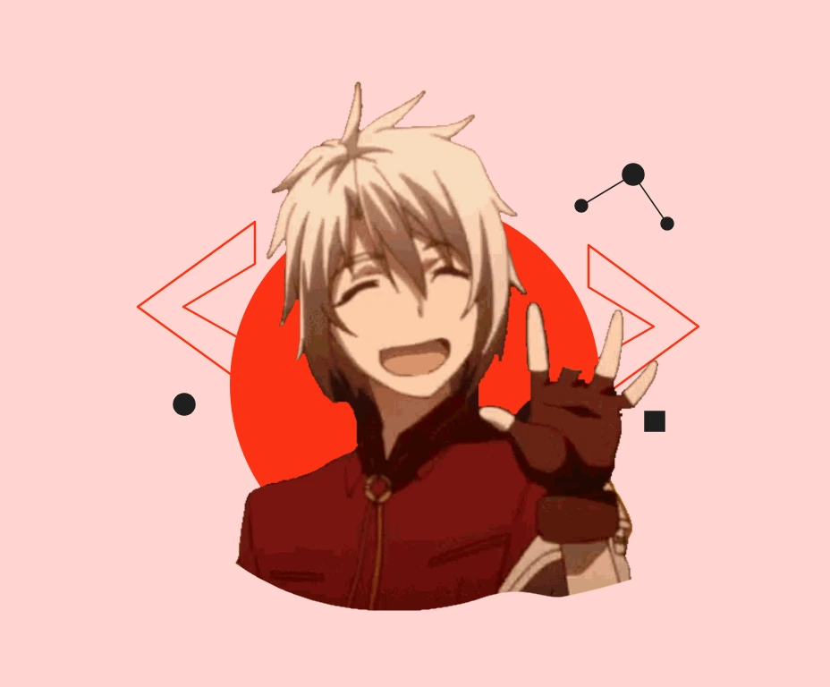

Web Development
Responsive websites and interfaces using HTML, CSS, JavaScript, TypeScript, React, Next.js, and Tailwind CSS.
Aspiring Software & Web Developer
Building my path in full-stack development, with a curiosity for AI. I turn ideas into useful web and mobile experiences, one line of code at a time.

I’m Joshua T. Sarno, a fourth-year BSIT student at Holy Name University in Bohol, Philippines. I independently develop web and mobile applications, with hands-on experience in database integration, media uploads, and real-time messaging. I’m looking for an internship or entry-level opportunity to learn, contribute, and grow.
From responsive interfaces to the data behind them, I’m developing the skills to bring useful digital ideas to life.
Responsive websites and interfaces using HTML, CSS, JavaScript, TypeScript, React, Next.js, and Tailwind CSS.
Database-connected applications using PHP, Laravel, Supabase, PostgreSQL, and SQLite.
Flutter and Dart applications with offline storage, media uploads, and practical features for everyday tasks.
Growing toward AI-assisted development and exploring how intelligent features can make web applications more useful.
A space for the things I’m building.
My toolkit for building across the web, mobile, and the backend. Hands-on skills I’m continuing to strengthen through practice.
HTML · CSS · JavaScript · TypeScript
React · Next.js · Tailwind CSS
PHP · Laravel · Supabase · PostgreSQL · SQLite
Flutter · Dart
Git · GitHub · VS Code · Vercel
Cloudinary · Socket.IO · Word & Excel (basic)
A foundation in information technology, a habit of building independently, and a clear direction for what comes next.
Fourth-year BSIT student at Holy Name University, Tagbilaran City, Bohol.
View my résuméRecognized three times during 2025–2026 while pursuing my degree in information technology.
A little about meSeeking an internship or entry-level role, with an interest in full-stack development and AI-assisted workflows.
Let’s connectHave an opportunity, a question, or an idea in mind? I’d love to hear from you. Let’s connect and build something useful together.